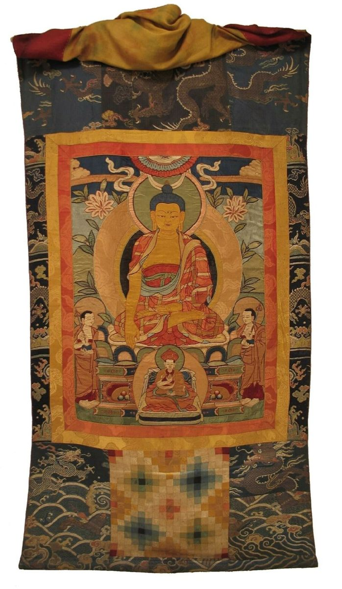

Services
How We Can Help
Lapis Lotus Journal is first and foremost a learning resource, but readers often write to us with practical questions. These are the ways we help, free of charge, as time allows.

Iconography Questions
Not sure which deity appears on your scroll? Send a clear photo and we will help you identify the main figure, the hand gestures, and the attributes, and point you to what they mean.
Buying Guidance
Thinking about your first thangka? We explain what questions to ask a seller about pigments, gold, canvas preparation, size, and mounting, so you can compare offers with confidence.
Care and Display Advice
We share simple guidance on hanging height, lighting, humidity, and how to roll and store a scroll safely, so your painting stays beautiful for decades.
Guides for Practitioners
For readers who use thangkas in meditation, we offer plain-language explanations of symbolism, with the reminder that practice instructions are best received from a qualified teacher.
What We Do Not Do
We do not appraise paintings for money or authenticate antiques. For valuations, please consult a qualified specialist or auction house.